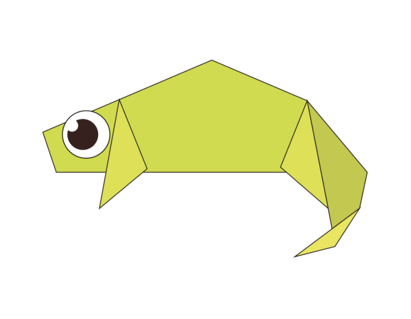
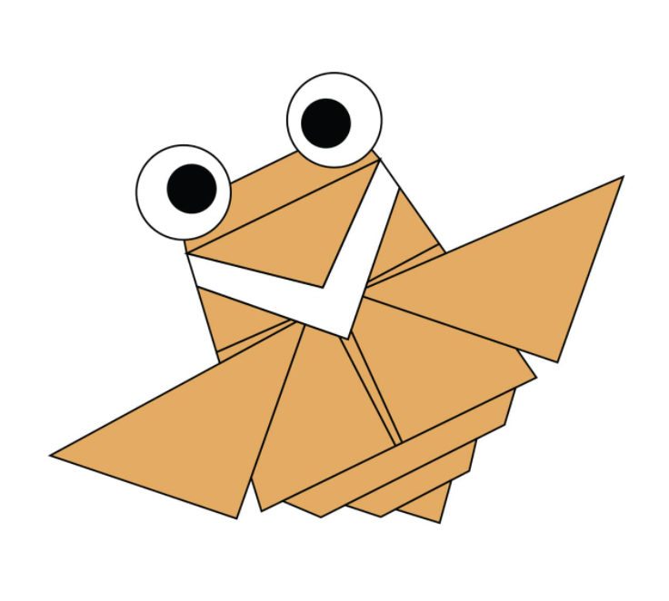

Interesting facts about chameleon
- SKIN CRYSTALS ENABLE THEM TO CHANGE COLOR AT WILL.
- CHAMELEONS CAN'T REGROW THEIR TAILS.
- THEIR FEET WORK LIKE SALAD TONGS.

Interesting facts about pigeons
- Pigeons are incredibly complex and intelligent animals.
- Pigeons are renowned for their outstanding navigational abilities.
- Pigeons are highly sociable animals.

Interesting facts about camel
- There are two types of camels: One humped or “dromedary” camels and two humped Bactrian camels.
- Camels have three sets of eyelids and two rows of eyelashes to keep sand out of their eyes.
- Camels have thick lips which let them forage for thorny plants other animals can't eat.

Interesting facts about camel
- Cicadas can survive a huge fall as babies, or nymphs.
- The loud whirring or buzzing sound you hear is an all-male cicada chorus.
- Females may be attracted to the sound of motors.